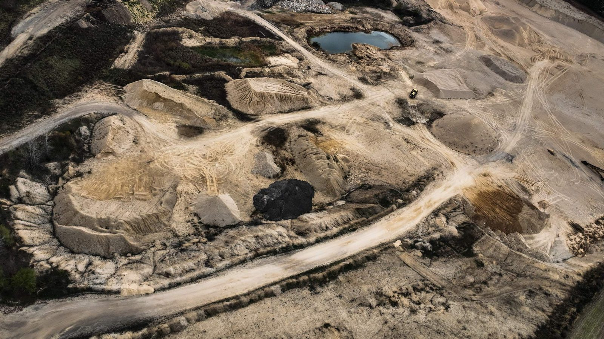

Industries · Contractors & Aggregate
Stockpile Volumes You Can Stand Behind
Stockpile inventory, cut/fill quantities, and site maps for Wisconsin pits, quarries, and earthwork sites. Every pile is measured from one RTK-positioned flight, and every measurement job comes with a checkpoint report that states the accuracy.Nobody climbs a pile, and nothing is estimated by eye.

What we measure
Numbers for Inventory, Billing, and Planning
In the field
Flown on a Programmed Route
Each mapping flight is planned ahead and flown automatically, with a fixed altitude, fixed photo overlap, and a corrected RTK position on every image. The same route is saved and reused on every repeat visit, so each month's data is collected the same way as the last.
Measured, then verified
Accuracy Is Stated, Not Assumed
Volumes drive billing and inventory decisions, so every volume and cut/fill job is checked against measured points on the ground before the numbers go out.
- 01RTK-positioned flightEvery photo is tied to a corrected GPS position.
- 02Ground controlTargets are set and measured on site with a survey-grade GNSS rover.
- 03Independent checkpointsExtra measured points are held out of processing and used only to test the result.
- 04Checkpoint reportHorizontal and vertical accuracy are reported with the volumes.
Why fly it
Why Measure From the Air
From the site
The Operation From Above
Need Stockpile or Cut/Fill Numbers?
Tell us where the site is, roughly how many piles, and how often you need numbers. We'll reply within one business day.
Volume, cut/fill, and map products are measurement and planning data, not a land survey. All flights are conducted by an FAA Part 107 certified pilot.